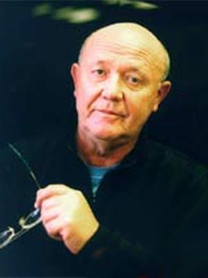

25 09 2011 (2057 дней 8 часов назад)
В ПАМЯТИ ЮРИЯ СЕНКЕВИЧА

На Земле, наверное, не осталось уголка, где бы ни побывал этот че-ловек. Он участвовал в экспедициях на Север-ный полюс и более года провел в Антарктиде, ему покорилась самая высо-кая горная вершина мира - Эверест. Вместе с норвежским путешес-твенником Туром Хейер-далом ходил в плавание на лодках "Ра" и "Тиг-рис" через Атлантичес-кий и Индийский океа-ны… Читатель уже на-верняка догадался, что речь идет о выдающемся ученом, лауреате Государственной премии СССР, ведущем ста-рейшей телепередачи советского и российского телевидения "Клуб кинопутешественников" Юрии Александровиче Сенкевиче. Его добрая улыбка была хорошо знакома миллионам телезрителей, а благодаря огромному интелле-ктуальному потенциалу, коммуникабельности и непосред-ственности Сенкевич сумел завоевать признание и любовь многих людей. Подобным образом воспринимали Юрия Александровича и в Абхазии, с которой судьба свела его в начале 50-х гг. ХХ в. и с которой впоследствии его свя-зывали особые отношения. Впрочем, обо всем по порядку…
Ю.А. Сенкевич родился 4 марта 1937 г. в г. Баян-Ту-мен (Монголия) в семье военных врачей. Еще в 15-летнем возрасте он вместе с мамой отдыхал в г. Сухум в небольшом военном санатории, располагавшемся на месте сегодняшнего ВС РВСН. "Я целыми днями проводил в море. И вот од-нажды неподалеку от берега я вдруг увидел кусок чего-то белого, прямоугольного… Я подплыл, нырял несколько раз, разгреб этот песок сверху. Увидел, что там что-то изображено. В то время в санатории были военные летчики, которые воевали в Корее. Они мне сказали, что надо звать археологов. Приехали археологи, взяли эту стелу, вытащили ее из моря и увезли. С тех пор ее не видел. Честно говоря, это даже где-то и описано. Я уже превратился у Фазиля Искандера в английского мальчика, но я на самом деле не английский мальчик. И я точно нашел эту штуку", - вспо-минал Юрий Александрович. "Штука", о которой идет речь, - знаменитая античная мраморная стела V в. до н.э., ныне хранящаяся в Абхазском государственном музее. Молодой Сенкевич совершил открытие неоценимой важности для абхазской исторической и археологической науки, хотя - как впоследствии признавался - "несколько неожиданно для самого себя".
Говорят, что талантливый человек талантлив во всем. Жизненный путь Юрия Сенкевича - ярчайшее тому подтверждение. После окончания Военно-медицинской академии им. Кирова в г. Ленинграде он работал началь-ником медпункта войсковой части, затем был переведен в Институт авиационной и космической медицины Мино-бороны СССР. В 1963 г. молодого и перспективного ученого откомандировали в Институт медико-биологических проблем Минздрава СССР, в котором Сенкевич прошел путь от младшего научного сотрудника до начальника учебно-тренировочного центра подготовки космонавтов. В 1973-82 гг. Сенкевич уже заведует отделом научно-медицинской и технической информации. Мало кто знает, что в резуль-тате исследований, проведенных в области космической физиологии и психологии, им было написано более 60 научных работ! Все это свидетельствует о поразительной многогранности личности Ю.А. Сенкевича, исключительной широте его кругозора и незаурядном творческом интеллекте.
В 1973 г. Сенкевич был приглашен на центральное телевидение в качестве ведущего передачи "Клуб кинопу-тешественников", которой руководил более 30 лет, до пос-ледних дней своей жизни. Юрий Александрович показывал зрителю отдаленные страны и уголки планеты, куда, по многим причинам, мог попасть далеко не каждый. Для миллионов телезрителей эта программа стала настоящим окном в мир, со временем приобрела классические черты и была занесена в Книгу рекордов Гиннеса. Съемочная группа "Клуба кинопутешественников" успела побывать и на абхазской земле. Уже после окончания кровопролитной войны с Грузией Сенкевич приехал в республику для съемки документального фильма "Православная Абхазия", повес-твующего об истории, традициях и культуре Апсны, ее уникальных архитектурных памятниках. Приезд личности подобного масштаба стал заметным событием для Абхазии и вызвал значительный интерес среди местной общест-венности. Во время своего пребывания в стране Души, организованного по инициативе министра культуры того периода К. Хагба, Юрий Александрович познакомился с Первым Президентом РА В. Ардзинба, литератором Д. Чачхалиа, поэтом, публицистом и переводчиком В. Зан-тариа, журналистом С. Арутюновым и другими предста-вителями республиканской интеллигенции, с которыми установил теплые и уважительные отношения. "С первой же минуты общения я испытывал такое ощущение, словно был знаком с популярнейшим телеведущим всю жизнь. Его добрая улыбка, внутренняя раскрепощенность, искреннее стремление вступать в дружескую беседу со всеми, кто расположен к этому, совершенно незаметно снимали психологический барьер" - вспоминал В. Зантариа. Показ фильма "Православная Абхазия", отснятого группой Сен-кевича, по центральному российскому телевидению внес важный вклад в дело популяризации историко-культурного наследия республики и формирования положительного обра-за Абхазии не только в России, но и на всем постсоветском пространстве.
Кандидат медицинских наук, полковник медицинской службы, академик Российской телевизионной академии, президент Ассоциации путешественников России, член Союза журналистов РФ, сопредседатель Фонда между-народной гуманитарной помощи и сотрудничества Юрий Александрович Сенкевич скончался 25 сентября 2003 г. на рабочем месте, незадолго до этого перенеся инфаркт после получения известия о смерти своего друга Тура Хейер-дала. Похоронен на Новодевичьем кладбище в г. Москве. В его честь назван Московский государственный институт индустрии туризма, самолет авиакомпании "Аэрофлот", а также океанский танкер усиленного ледового класса общей грузоподъемностью 100 тыс. тонн (в два раза больше "Титаника"). В Абхазии также чтят и помнят доброе имя Юрия Александровича - выдающегося ученого, иссле-дователя, путешественника, неутомимого популяризатора идей дружбы между народами и подлинного интерна-ционализма.
Николай Медвенский